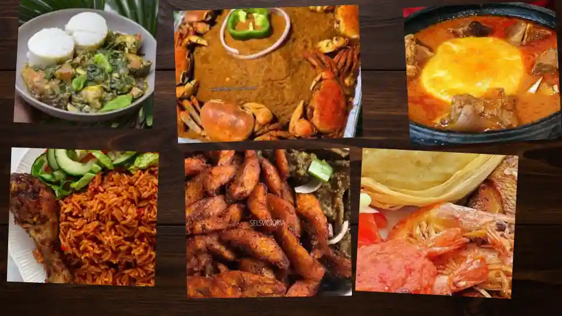

Discover Ghanaian Local Foods
Learn about traditional dishes, common ingredients, and simple food recommendations from Ghana.
View Food Guide
Simple Food Learning
This website shares information about Ghanaian foods such as jollof rice, waakye, banku, fufu, and kenkey. Each food card includes ingredients, region, meal time, and a short description.
What You Can Do
- Browse 15 Ghanaian food items.
- Open a modal for more details.
- Save favorite foods in your browser.
- Suggest another food using the form.